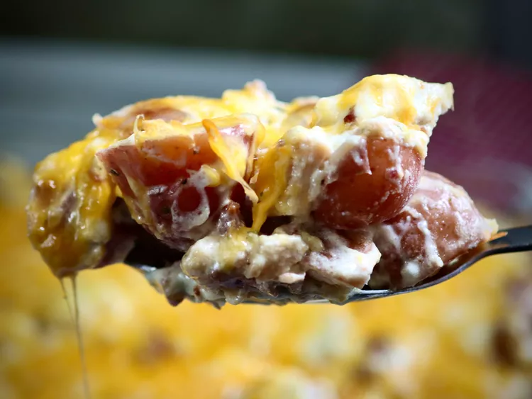

Chicken Bacon Ranch Potato Casserole
Go back to recipes

Ingredients
- cooking spray
- 3 cups diced cooked chicken
- 3 pounds diced baby red potatoes
- 1 cup chopped cooked bacon
- 2 cups shredded Cheddar Jack cheese, divided
- 1 (1 ounce) packet ranch dressing mix
- 1 cup sour cream
- 1/4 cup mayonnaise
- 1/4 cup heavy cream
Steps
- Preheat the oven to 350 degrees F (180 degrees C). Spray a 9x13-inch baking dish with cooking spray or grease the dish.
- Add diced potatoes to a large pot of cold water (salted if desired). Bring potatoes to a boil over high heat. Cook until fork tender, 8 to 10 minutes. Drain potatoes and then return to the pot.
- Add diced chicken breast, bacon, 1 cup Cheddar Jack cheese, ranch dressing mix, mayonnaise, sour cream, and heavy cream to the pot with drained potatoes. Stir until well combined.
- Transfer potato mixture to the prepared baking dish; sprinkle the casserole with remaining 1 cup Cheddar Jack cheese
- Bake in the preheated oven until bubbly and the cheese is melted, about 30 minutes.